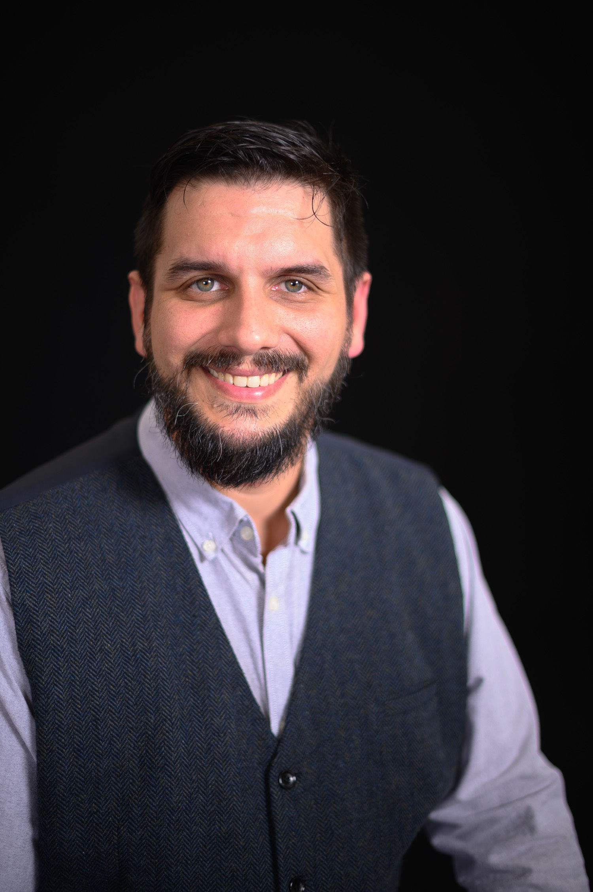
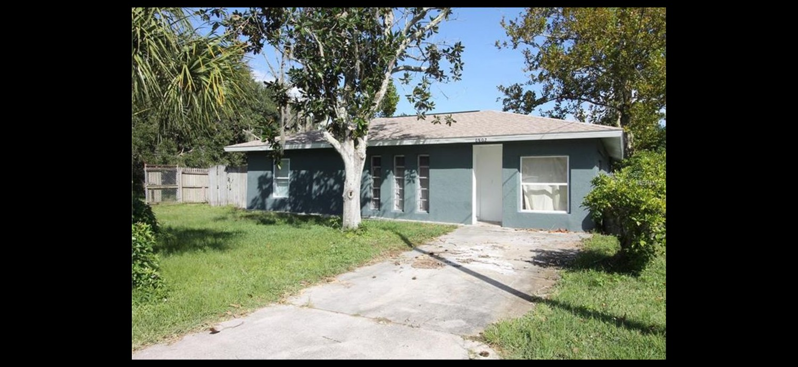
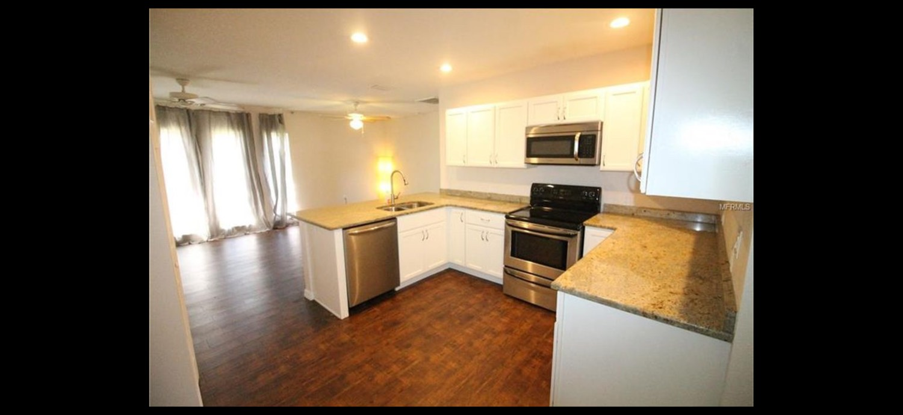
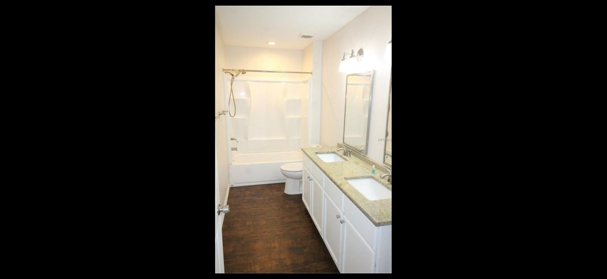
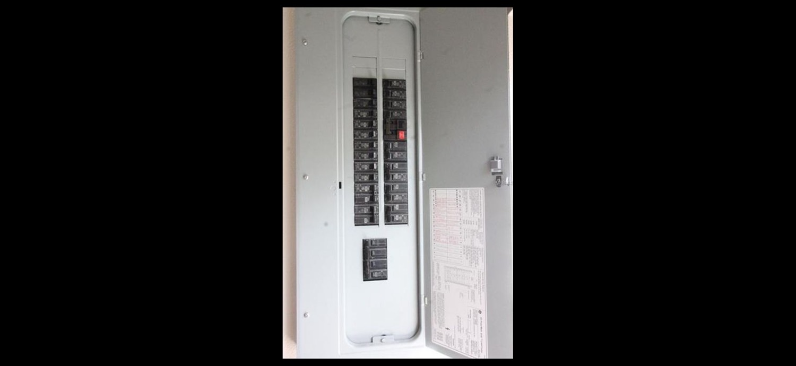
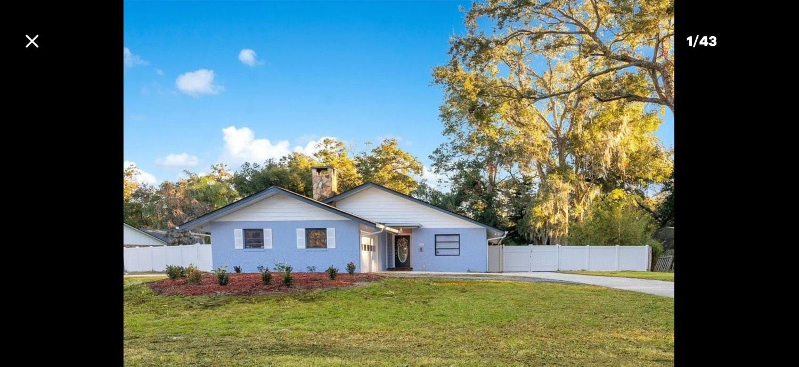
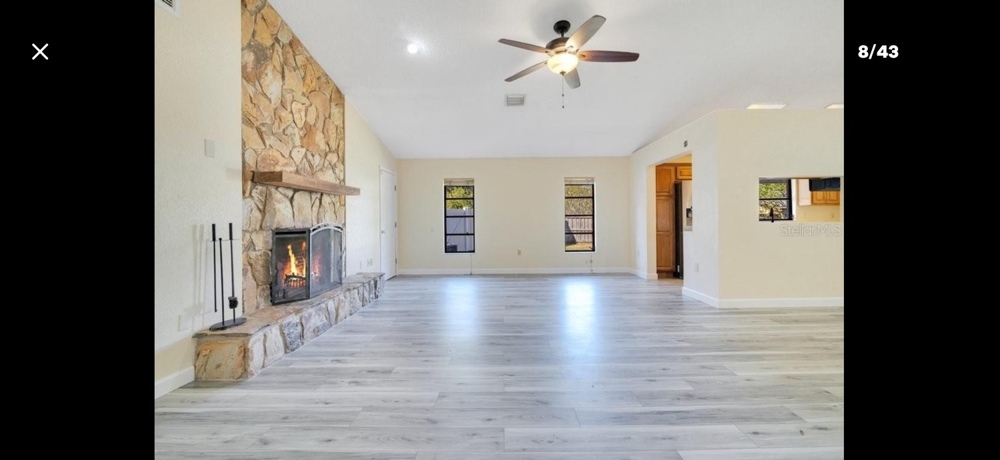
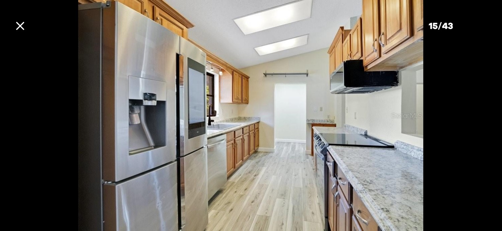
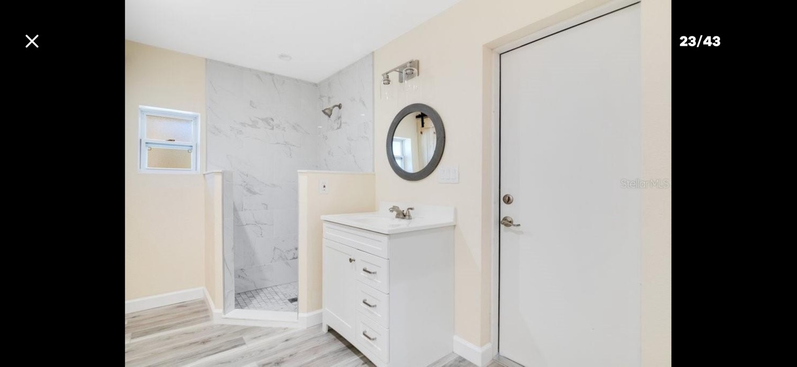

Massage therapy
Florida LMT MA52943 · Clear/Active
Licensed since 2008. Spa Director at Therapy Touch Massage in Leesburg, 2010–2014. I have kept my own practice since 2010. FSCJ certificate, 2007–2008.

The learning never stops.
Harmony / St. Cloud · Central Florida
If something is broken, I would rather take it apart than talk around it. Houses, cars, fixtures, appliances, a keyboard that went quiet. I stay with the job until it is actually done.
I have been working with my hands for a long time. Some of that work had a shop name on the paycheck. A lot of it did not. The habit is the same either way: look at the problem, figure out what it needs, and finish clean.
That has included remodeling houses with a small team, turning wrenches at Pep Boys in Leesburg, running a massage practice and, for four years, the floor at Therapy Touch. Since 2021 I have also been a full-time family caregiver under Florida’s NICA program. In between I keep taking the jobs that show up — paint, floors, a fixture, an appliance, a car that will not start, a church keyboard that lost its sound.
The two houses below are the easiest way to show the scale of it. Stell Drive was a gut. Fairway was smaller, then we closed in the porch and added rooms. I still do the quieter repair work around those projects. The photos are ones I took for the listing agent.
Whole-house renovation with a small team. Pasco County treated the work as changing the house’s effective age.




Fairway was simpler. Paint, floors, countertops. Then we enclosed the back porch on a raised wood platform — concrete like Stell would have cost too much — and built a family room and a bathroom. Those are the rooms with the sliding barn doors.




General Service Technician (GST). Not ASE certified.
Oil, tires, inspections, and basic service in a busy shop. I also straightened out the inventory. I do not have ASE or EPA papers, and I am not going to list this as something it was not.
When I was a teenager I worked for The Music Store in Boca Raton. We loaded trucks before dawn and set sound, lights, and staging for outdoor shows from Boca down to Fort Lauderdale.
Florida LMT MA52943 · Clear/Active
Licensed since 2008. Spa Director at Therapy Touch Massage in Leesburg, 2010–2014. I have kept my own practice since 2010. FSCJ certificate, 2007–2008.
Florida 02-15 · DFS file W276147 · Brokers Alliance
Independent agent. I would rather talk to someone and get the rate right than send a generic email.
NICA · 2021–present
Full-time family caregiver under Florida’s Birth-Related Neurological Injury Compensation Association. NICA pays for the skilled care a family would otherwise have to hire an RN or LPN to do.
UCF boot camp 2024–2025 · ISC2 CC
The UCF boot camp ran from network setup through web-app security. ISC2 Certified in Cybersecurity, credential 2377032, issued January 2025. I treat it as useful training, not a claim that I have been sitting in a SOC.
I went to Tegucigalpa once after a hurricane, with Pastor José Ortega. We treated children for lice, helped rebuild homes that the storm had torn up, and worked on a school outside of town. I was in Chile twice with Pastor Rick Wilkes, on a preaching tour from Santiago down to Chiloé. I also spent time in China on a cultural-exchange visit, helping people who wanted to practice their English.
I play guitar and sing — blues, jazz, rock, and Spanish — and I sing tenor in an Orthodox church choir. A.S. in Psychology from Lake-Sumter State College, 2019–2021.